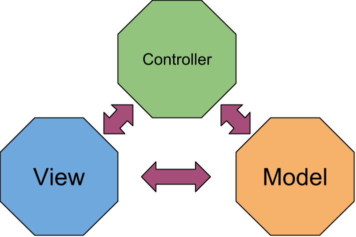

AngularJS 101
benjaminmaggi@gmail.com
Angular's creation
- It was created by Miško Hevery
- All previous MV* FrontEnd frameworks had 80% of the code for DOM manipulation and 20% for code that matters
- You had to explicitly say exactly what you wanted to do with DOM every time
- It wasn't fast to develop at all
Angular's 4D
- Declarative
- Data Binding
- Directives
- Dependency Injection
Binding
Clasic approach
1. A function gets attached to the ‘click’ event of button
2. The functon collects fields and puts them into a variable.
3. The variables gets serialized into JSON and goes to server.
4. We mark “request in process” state using another variable (to not react double clicks mainly).
5. We modify DOM adding indicator.
6. As soon as the request finihes we parse response body and get invalidation data.
7. We modify DOM adding invalidation information and removing the loading indicator.
The benefit of using angular:
- Angular makes databinding declarative, DOM augumenting
- Works with themplates (mustache).
- No need to manipulate the DOM.
- Models are POJO simpler syntax than accessors.
- It Automagically monitors your objects for you, no need to write listeners !
Any downsides ??
Yes but...
Classic Hello World application.
<input ng-model="person.name" type="text" placeholder="Your name">
<h1>Hello {{ person.name }}</h1>
When the value in the input field changes, the person.name will be updated and the view will reflect the change.
Recap:
- Automatic data binding gives us the ability to consider the view to be a projection of the model state
- Any time the model is changed in the client-side model, the view reflects these changes without writing any custom code. It just works.
- In the Model View Controller (or MVC) view of the world, the controller doesn’t have to worry about being in the mix of rendering the view..
Scopes
The $scope View of the World
- The scopes of the application refer to the application model.
- Scopes serve as the glue between the controller and the view.
- Scopes in AngularJS have hierarchy.
- Scopes are the source of truth.
- Scopes provide the ability to watch for model changes.
All properties found on the $scope object are automatically accessible to the view.
<a href="#/home"></a>
<div ng-app="myApp">
<h1>Hello {{ name }}</h1>
</div>
code:
angular.module('myApp', [])
.run(function($rootScope) {
$rootScope.name = "World";
});
What Can Scopes Do?
- They provide observers to watch for model changes.
- They provide the ability to propagate model changes.
- They can be nested.
- Scopes are the source of truth.
- They provide an execution environment in which expressions are evaluated.
Controllers

Controller Hierarchy

- Every part of an AngularJS application has a parent scope.
- .
Extends HTML to structure your application
- Extends HTML to structure your application.
- Can be placed in element names, attributes, classnames and comments.
- Declarative.
- Use the data available in the scope.
Let's have a look at an example: ngRepeat.
<tr ng-repeat="user in users">
<td>{{user.name}}</td>
<td>{{user.age}}</td>
</tr>
It ilterates on a collection in the scope to create the DOM.
AngularJS comes with a collection of standard directives that can be combined.
<tr ng-repeat="user in users" ng-show="user.age >= 18">
<td>{{user.name}}</td>
<td>{{user.age}}</td>
</tr>
ngShow let you hide elements that do not validate a given expression.
Transclusion
Routes: REST/Servers v. Client Apps
- HTTP is stateless, so routes help define application state
- REST emphasizes semantic routes
- But...
- There is more state than can be represented in a route (user state, session state)
- Main function is `then` which receives 2 functions, one for success and one for error
- Client-side apps don’t actually need routes to work (e.g. many jquery-based apps)
Why use routes?
- Make the back button work as expected
- Make major (page-like) transitions clear
- Allow easy linking
- Make testing easier
- Encapsulate some state
Installation
<script src="angular.js"></script>
<script src="angular-route.js"></script>
var myApp = angular.module('myApp', 'ngRoute')
$routeProvider
var myApp = angular.module('myApp', ['ngRoute']);
myApp.config(function ($routeProvider) {
$routeProvider
.when('/users', {
templateUrl: 'list.html',
controller : 'listController'
})
.when('/users/:id', {
templateUrl: 'detail.html',
controller : 'detailController'
})
.otherwise({ redirectTo: '/' });
});
Basic Routes
.when('/users/:id', {
templateUrl: 'detail.html',
controller : 'detailController'
})
Routing Flow
<a href="#/home"></a>
$location.path("#/home");
Routing Boardcasted Events
- $locationChangeStart
- $routeUpdate
- $routeChangeStart
- $routeChangeError
- $routeChangeSuccess
Route Object
- Controller or controllerAs
- Template or TemplateUrl
- Resolve
- RedirectTo
- [reloadOnSearch=true]
- [caseInsensitiveMatch=false]
Resolve Option
Each item in the resolve map:- An optional map of dependencies which should be injected into the controller
- In any of these dependencies are promises, the router will wait for them all to be resolver or one to be rejected before the controller is instantiated
- Success: all promises are resolved successfully.
- Error: any of the promises are rejected.
- No UI flickr as promises are resolved
- Controllers can asume objects exists
- Tests are cleaner: pass in data object explicitly
Resolve for Data
when('/tag/:tagName', {
resolve: {
tagResolve: ['tag','$route', function(tagService, $route) {
return tagService.get($route.current.params.tagName);
}],
sparkClustersResolve: ['sparkCluster','$route', function(sparkClusterService, $route) {
return sparkClusterService.getSparkClustersByTag($route.current.params.tagName);
}]
}});
Resolve Option
Treat your resolved object like a dependency in the controller:
.controller('ViewTagCtrl', ['$scope', 'tagResolve', 'sparkCluster'], function (...){
/* */
})
.when('/tag/:tagName', {
controller: 'ViewTagCtrl'
})
Resolve for Rules
Resolve for Rules Rejected Promises cause routes to fail. You can use this to make rules for the route like ACLs or prerequisites. Reject a promise to cause a route to fail.Using resolve to make rules means:
- All resolution rules must pass before route succeeds and controller is instantiated
- Common ACLs (logged-in) specified in routes, not each controller or service
- Can redirect the user to an appropriate page (also can do user-facing error)
Resolve for Rules
when('/tag/:tagName', {
resolve: {
mustAuth: ['route', function(routeService) {
return routeService.mustAuth('/');
}]}]}});
routeService.mustAuth = function(redirectTo) {
var authDeferred, p;
authDeferred = $q.defer();
p = userService.getCurrent();
p.then(function(currentUser) {
if (angular.isUndefined(currentUser._id)) {
$location.url(redirectTo);
authDeferred.reject();
} else {
authDeferred.resolve(mustAuth);
}
});
return authDeferred.promise;
};
Cancelling Route Changes
$rootScope.$on('$locationChangeStart', function (event, next, current) {
var result = $window.confirm('Continue?');
if (!result) {
event.preventDefault(); return;
}
});
Recap
- Angular’s route system is flexible and powerful, if you take advantage of resolve and promises.
- Probably the best way to deal with user authentication.
- Angular UI router: use ‘state’ instead of routes. Seems good. Worth considering if you start fresh.
Databinding under the hood
The Digest Loop and $apply
- AngularJS compares a value with its previous value and if it has changed then a change event is fired. This is dirty checking
- A digest is the cycle that performs dirty checking. This is initiated via $digest().
- No need to manipulate the DOM.
- Automatically monitors your objects for you and modifies expressions in the view and vice versa.
Routes: REST/Servers v. Client Apps
- HTTP is stateless, so routes help define application state
- REST emphasizes semantic routes
But...
- There is more state than can be represented in a route (user state, session state)
- Client-side apps don’t actually need routes to work (e.g. many jquery-based apps)
Why use routes?
- Make the back button work as expected
- Make major (page-like) transitions clear
- Allow easy linking
- Make testing easier
- Encapsulate some state
Installation
<script src="angular.js"></script>
<script src="angular-route.js"></script>
Include
var myApp = angular.module('myApp', 'ngRoute')
Configuring $routeProvider
var myApp = angular.module('myApp', ['ngRoute']);
myApp.config(function ($routeProvider) {
$routeProvider
.when('/users', {
templateUrl: 'list.html',
controller : 'listController'
})
.when('/users/:id', {
templateUrl: 'detail.html',
controller : 'detailController'
})
.otherwise({ redirectTo: '/' });
});
Basic Routes
.when('/users/:id', {
templateUrl: 'detail.html',
controller : 'detailController'
})
:id is stored in $route.current.params, and is available to the controller and the resolve functions.
Routing Flow
<a href="#/home"></a>
Or
$location.path("#/home");
Routing Boardcasted Events
- $locationChangeStart
- $routeUpdate
- $routeChangeStart
- $routeChangeError
- $routeChangeSuccess
Route Object
- Controller or controllerAs
- Template or TemplateUrl
- Resolve
- RedirectTo
- [reloadOnSearch=true]
- [caseInsensitiveMatch=false]
Resolve Option
Each item in the resolve map:- An optional map of dependencies which should be injected into the controller
- In any of these dependencies are promises, the router will wait for them all to be resolver or one to be rejected before the controller is instantiated
- Success: all promises are resolved successfully.
- Error: any of the promises are rejected.
- No UI flickr as promises are resolved
- Controllers can asume objects exists
- Tests are cleaner: pass in data object explicitly
Resolve for Data
when('/tag/:tagName', {
resolve: {
tagResolve: ['tag','$route', function(tagService, $route) {
return tagService.get($route.current.params.tagName);
}],
sparkClustersResolve: ['sparkCluster','$route', function(sparkClusterService, $route) {
return sparkClusterService.getSparkClustersByTag($route.current.params.tagName);
}]
}
});
Resolve Option
Treat your resolved object like a dependency in the controller:
.controller('ViewTagCtrl', ['$scope', 'tagResolve', 'sparkCluster'], function (...){
/* */
})
.when('/tag/:tagName', {
controller: 'ViewTagCtrl'
})
Resolve for Rules
Resolve for Rules Rejected Promises cause routes to fail. You can use this to make rules for the route like ACLs or prerequisites. Reject a promise to cause a route to fail.Using resolve to make rules means:
- All resolution rules must pass before route succeeds and controller is instantiated
- Common ACLs (logged-in) specified in routes, not each controller or service
- Can redirect the user to an appropriate page (also can do user-facing error)
Resolve for Rules
when('/tag/:tagName', {
resolve: {
mustAuth: ['route', function(routeService) {
return routeService.mustAuth('/');
}]}]}});
routeService.mustAuth = function(redirectTo) {
var authDeferred, p;
authDeferred = $q.defer();
p = userService.getCurrent();
p.then(function(currentUser) {
if (angular.isUndefined(currentUser._id)) {
$location.url(redirectTo);
authDeferred.reject();
} else {
authDeferred.resolve(mustAuth);
}
});
return authDeferred.promise;
};
Cancelling Route Changes
$rootScope.$on('$locationChangeStart', function (event, next, current) {
var result = $window.confirm('Continue?');
if (!result) {
event.preventDefault(); return;
}
});